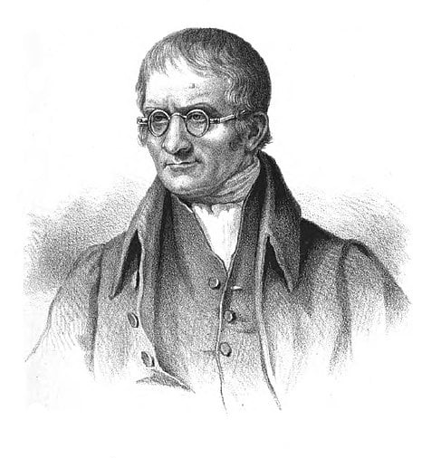

Hukum dan Perhitungan Kimia
Saat ini, Indonesia memiliki cadangan bijih tembaga (konsentrat) sebesar 3,1 miliar ton dengan tingkat produksi sebanyak 100 juta ton per tahun. Konsentrat itu merupakan pasir olahan dari batuan tambang, yang mengandung senyawa kimia berupa tembaga, emas, dan perak. Setiap ton konsentrat mengandung 26,5% tembaga; 39,34 g emas; dan 70,37 g perak.
Bagaimana menghitung kadar emas, tembaga, dan perak dalam senyawa konsentrat tersebut sehingga dapat diprediksi besarnya produksi emas, perak, dan tembaga? Untuk itulah Anda harus memahami hukum dasar dan perhitungan kimia
Mau tahu lebih?
Hukum Dasar Kimia
Afaan tuh hukum dasar kimia? Hukum dasar kimia adalah prinsip-prinsip yang mendasari pemahaman kita tentang sifat dan perubahan materi dalam dunia kimia. Hukum-hukum ini menggambarkan hubungan yang konsisten antara zat-zat yang terlibat dalam reaksi kimia dan bagaimana mereka berinteraksi satu sama lain. Dengan hukum-hukum dasar ini, kita dapat memprediksi dan menjelaskan berbagai fenomena kimia yang terjadi di sekitar kita.
Pada dasarnya, hukum dasar kimia berfokus pada pemahaman bahwa dalam setiap perubahan kimia, baik itu reaksi atau perubahan fisik, terjadi keteraturan tertentu yang dapat dipahami dan dijelaskan melalui hukum-hukum ini. Prinsip-prinsip tersebut memungkinkan kita untuk menjelaskan bagaimana materi bertindak dalam kondisi tertentu dan bagaimana reaksi kimia berlangsung dengan cara yang dapat diprediksi dan diuji secara ilmiah.
Jenis Hukum Dasar Kimia
Terdapat beberapa jenis hukum hukum dasar dalam dunia kimia
- Hukum Lavoisier (Hukum Kekekalan Massa)
Logam magnesum bermassa 4 gram dibakar dengan oksigen akan menghasilkan magnesium oksida. jika massa oksigen yang digunakan 6 gram, berapa gram massa magnesium oksida yang dihasilkan?
- Sejumlah logam besi dipijarkan dengan 3,2 gram belerang menghasilkan 8,8 gram senyawa besi(II) sulfida. Berapa gram logam besi yang telah bereaksi
- Hukum Proust (Hukum Kelipatan Perbandingan)
Perbandingan massa unsur oksigen dan hidrogen di dalam air adalah 8: 1. Jika 100 gram unsur oksigen dan 3 gram unsur hidrogen bergabung membentuk senyawa (air), berapa gram air yang dapat dihasilkan?
- Hukum Dalton (Hukum Kelipatan Perbandingan)
Unsur X dan Y dapat membentuk dua senyawa yang masing-masing mengandung 50% dan 60% unsur X. Tentukan perbandingan massa unsur Y dan X tetap.
- Hukum Gay-Lussac (Hukum Perbandingan Volume)
Pada suhu dan tekanan tertentu, setiap 1 liter gas nitrogen akan tepat habis bereaksi dengan 3 liter gas hidrogen membentuk 2 liter gas amonia. Tentukan rumus molekul amonia.
Jika gas metana dibakar sempurna dengan oksigen, reaksi yang terjadi dapat dinyatakan sebagai berikut.
![]()
Hukum Kekekalan Massa awalnya dijelaskan oleh ilmuwan Rusia bernama Mikhail Lomonosov (1748). Ia melakukan eksperimen selama 17 tahun untuk membuktikan hukum kekekalan materi dengan menunjukkan bahwa pelat timah yang dipanaskan dalam wadah tertutup tidak berubah massanya.
Namun, pada akhirnya hukum Kekekalan Massa disempurnakan oleh Antoine Lavoisier pada tahun 1765. Ia menganalisis massa zat sebelum dan sesudah reaksi.Hasilnya, massa zat sebelum dan sesudah reaksi selalu sama. Jadi, saat terjadi perubahan kimia, suatu zat bukan diciptakan atau dihancurkan melainkan diubah. Dari percobaannya, ia membuktikan kebenaran hukum kekekalan massa yang berbunyi "Di dalam suatu sistem tertutup, massa zat-zat sebelum reaksi sama dengan massa zat sesudah reaksi".
Contoh :
Pembahasan :
massa zat-zat sebelum reaksi = massa zat-zat hasil reaksi
m magnesium oksida = m magnesium + m oksigen
= 4 gram + 6 gram = 10 gram
Pembahasan :
Massa (besi + belerang) = m besi(II) sulfida
m besi + 3,2 = 8,8
m besi = 8,9 - 3,2
= 5,7 gram
Pada sekitar tahun 1799, Joseph Luis Proust menemukan bahwa "Perbandingan massa unsur-unsur dalam satu senyawa adalah tertentu dan tetap". Senyawa yang sama meskipun berasal dari sumber yang berbeda atau dibuat dengan cara yang berbeda ternyata mempunyai komposisi yang sama.
Contoh:
Air tersusun dari unsur hidrogen dan unsur oksigen dengan perbandingan massa H: 0 = 1: 8, dari mana pun air tersebut berasal dan bagaimana cara air dibentuk. Air dalam keadaan sebagai es atau uap air mengandung unsur hidrogen dan oksigen dengan perbandingan H: O = 1:8. Apabila ada senyawa yang tersusun dari unsur hidrogen dan unsur oksigen dengan perbandingan yang berbeda, maka dapat dipastikan bukan air. Misalnya, hidrogen peroksida (zat pemutih rambut atau kain) juga terbentuk dari hidrogen dan oksigen, tetapi perbandingan antara hidrogen dan oksigen adalah 1: 16.
Contoh :
Pembahasan :
Perbandingan massa oksigen dan hidrogen dalam air sebagai berikut.
massa O : massa H = 8 : 1
Jika semua unsur O habis, diperlukan H = 1/8 × 100 gram
= 12,5 gram
Dalam reaksi kimia, tidak mungkin zat yang bereaksi melebihi yang disediakan. Oleh karena hanya tersedia 3 gram unsur hidrogen, tidak mungkin hidrogen yang bereaksi 12,5 gram. Berarti, zat yang habis membentuk senyawa adalah unsur hidrogen bermassa 3 gram.
Jika hidrogen yang membentuk senyawa ada 3 gram, maka oksigen yang diperlukan sebagai berikut
Massa oksigen = 8/1 × 3 gram
= 24 gram
Massa air yang dihasilkan = massa oksigen + massa hidrogen
= 24 gram + 3 gram
= 27 gram
Oksigen yang tersisa = 100 - 24 gram
= 76 gram
Dalam reaksi kimia dimungkinkan adanya zat yang habis atau tersisa, tetapi tidak mungkin ada zat yang kurang.

Dari dua unsur dapat dibentuk beberapa senyawa dengan perbandingan masssa yang dapat berbeda-beda. Misalnya, belerang dengan oksigen dapat membentuk senyawa SO₂ dan SO₃, sedangkan unsur hidrogen dan oksigen dapat dibentuk senyawa H₂O dan H₂O₂.
Dalton menyelidiki perbandingan dari unsur-unsur tersebut pada setiap senyawa dan didapatkan suatu pola keteraturan. "Apabila dua unsur dapat membentuk lebih dari satu senyawa, dan jika untuk massa salah satu unsur tersebut tetap (sama), maka perbandingan massa unsur yang lain dalam senyawa-senyawa tersebut merupakan bilangan bulat dan sederhana." Pernyataan tersebut selanjutnya disebut dengan Hukum Kelipatan Perbandingan atau Hukum Kelipatan Dalton.
Contoh:
Nitrogen dan oksigen dapat membentuk senyawa-senyawa N₂O, NO, dan N₂O₄ dengan komposisi massa terlihat dalam tabel berikut.
| Senyawa | Massa Nitrogen (gram) | Massa Oksigen (gram) | Perbandingan |
| N₂O | 28 | 16 | 7 : 4 |
| NO | 14 | 16 | 7 : 8 |
| N₂O₃ | 28 | 48 | 7 : 12 |
| N₂O₃ | 28 | 64 | 7 : 16 |
Berdasarkan tabel tersebut, apabila massa N dibuat tetap (sama) sebanyak 7 gram, maka perbandingan massa oksigen di dalam N₂O : NO : N₂O₃ : N₂O₃ = 4 : 8 : 12 : 16 atau 1 : 2 : 3 : 4.
Contoh :
Pembahasan :
Pada senyawa pertama, massa unsur X 50%, maka massa unsur Y 50%, sedangkan pada senyawa yang kedua, jika X 60%, maka massa Y 40%
Jadi,
Senyawa I --> X : Y = 50% : 50% atau X : Y = 1 : 1
Senyawa II --> X : Y = 60% : 40% atau X : Y = 3 : 2
Untuk X tetap berarti harga X harus sama, maka
Senyawa I --> X : Y = 3 : 3
Senyawa II --> X : Y = 3 : 2
Berart Y pada senyawa I : Y pada senyawa II = 3 : 2.

Hukum perbandingan volume ditemukan oleh Joseph Louis Gay Lussac pada tahun 1808. Ia mengamati suhu dan tekanan yang berjumlah sama, selain itu volume gas oksigen bereaksi dengan dua volume hidrogen yang menghasilkan dua volume uap air. Maka bunyi hukum Gay Lussac adalah:
"Pada suhu dan tekanan yang sama, volume gas-gas yang bereaksi dan volume gas-gas hasil reaksi berbanding sebagai bilangan bulat dan sederhana."
Contoh :
Pembahasan :
Oleh karena gas hidrogen dan nitrogen merupakan molekul diatomik, maka persamaan reaksinya dapat dituliskan sebagai berikut
N₂(g) + 3H₂(g) → 2HxHy
Jumlah atom-atom seluruh dan sesudah reaksi harus sama, maka dapat dinyatakan sebagai berikut.
| Atom | Sebelum reaksi | Sesudah reaksi | Persamaan | Hasil |
| N | 2 | 2x | 2 = 2x | x = 1 |
| H | 6 | 2y | 6 = 2y | y = 3 |
Jadi, rumus molekul amonia adalah NH3.
CH4(g) + O₂(g) → CO2 (g) + H2O (g)
Apabila metana yang dibakar 3 liter, berapa liter gas oksigen yang diperlukan dan berapa liter gas CO2 dan H2O yang dihasilkan jika semua volume diukur pada suhu dan tekanan yang sama?
Pembahasan :
Setarakan dulu reaksinya
CH4(g) + 2O2(g) → CO2(g) + H2(g)
Perbandingan volume
CH4 : O2 : CO2 : H2O = 1 : 2 : 1 : 2
volume CH4 = 3 liter,
maka volume O2 = 2/1 × 3 liter
= 6 liter
volume CO2 = 1/1 × 3 liter
= 3 liter
volume H2O = 2/1 × 3 liter
= 6 liter
Perhitungan Kimia

Anda dapat menimbang sebutir telur seperti pada gambar disamping, tetapi dapatkah anda menimbang sebutir beras dengan neraca seperti gambar disamping, kemudian diminta mencari massa sebutir beras?
Yap, Jawaban anda benar, jika anda ingin menentukan massa sebutir beras dengan neraca, anda dapat menimbang 0,1 gram beras kemudian menghitung jumlah butir berasnya. Hasilnya adalah massa rata-rata 1 butir beras.
Massa Atom Relatif dan Massa Rumus Relatif
- Massa Atom Rata-Rata
- Massa Atom Relatif (Ar)
- Massa rata-rata atom N adalah 14 sma, berapa massa atom relatif N?
- Diketahui massa 1 atom C-12 adalah 2,04 × 10-27 kg. Berapa massa rata-rata 1 atom magnesium, jika Ar Mg = 24?
- Massa Rumus Relatif (Mr)
- Hitunglah massa molekul relatif (Mr) (NH4)2SO4, jika diketahui Ar N = 14, H = 1, S = 16, O = 16.
- Bilangan Avogadro
- Berapa atom oksigen dan hidrogen yang terdapat dalam 0,5 mol molekul H2O?
- Massa Molar (mm)
- Seorang laboran di laboratorium ingin membuat 1 liter larutan gula (C12H22O11), yang didalamnya harus mengandung 3,01 × 1023 molekul gula. Berapa gram gula yang harus dilarutkan oleh laboran tersebut? Ar C = 12, O = 16, dan H = 1.
- Berapa gram massa urea (CO(NH2)2) yang mengandung 0,15 mol urea? (diketahui: Ar C = 12; O = 16; N = 14; H = 1)
- Berapa jumlah molekul O2 yang terdapat dalam 8 gram gas oksigen (Ar O = 16)?
- Volume Molar
- Hitunglah volume 4 gram gas SO3 pada 0°C, 1 atm, jika diketahui Ar S = 32 dan O = 16.
- Berapakah massa 10 liter CH4 (Mr = 16), jika diukur pada 0°C dan tekanan 1 atm?
Seperti halnya beras, atom merupakan partikel yang sangat kecil. Sampai saat ini, tidak ada neraca yang dapat digunakan untuk menimbang satu butir atom. Oleh karena itu, digunakan alat yang berbeda, yang disebut dengan spektrometer massa.
Seperti telah dibahas dalam teori atom, bahwa atom-atom di alam dapat mempunyai massa yang berbeda. Oleh karena itu, massa atom dihitung berdasarkan massa rata-rata dari seluruh atom yang ada di alam. Dengan menggunakan spektrometer massa, diketahui bahwa atom hidrogen merupakan atom yang paling ringan dengan massa 1,67 x 10-27 kg. Oleh karena nilainya yang sangat kecil, maka dibuat cara untuk mempermudah perhitungan, di mana massa suatu partikel yang nilainya 1,66 x 10-27 kg disebut dengan 1 sma (satuan massa atom). Jadi, massa 1 atom hidrogen dianggap sama dengan 1 s.m.a.
Masih ingat isotop, bukan? Atom karbon mempunyai isotop 126C 136C dan 146C, artinya massa atom karbon ada yang 12 sma dan 13 sma. Oleh karena ada beberapa isotop tersebut, maka massa atom merupakan massa rata-rata dari seluruh isotop yang ada di alam.
Contoh:
Atom klorin di alam terdapat dalam dua macam isotop, yaitu sebanyak 75% sebagai CI-35 yang massanya 35 sma, dan 25% sebagai CI-37 yang massanya 37 sma. Jadi, massa rata-rata atom klorin sebagai berikut.
Massa rata-rata atom CI = ∑massa CI-35 + ∑massa CI-37 / jumlah seluruh atom Cl di alam
(75% x 35) + (25% x 37) / 100%
= 35,5 sma
Mengukur massa adalah membandingkan massa suatu benda terhadap benda yang lain, dengan massa benda pembanding disebut sebagai massa standar. Misalnya, kita menimbang gula dan dinyatakan massanya 1 kg, maka sebenarnya massa gula tersebut adalah sama (sebanding) dengan massa anak timbangan yang massanya 1 kg. Sebagai standar massa dalam penimbangan gula tersebut adalah massa anak timbangan.
Hal yang sama juga berlaku dalam penentuan massa suatu atom, yaitu dalam menentukan massa atom. Sebagai standar massa atom adalah massa 1 atom karbon-12 (atom karbon yang massanya 12 sma). Jadi, massa atom yang diperoleh dari pengukuran adalah massa atom relatif terhadap atom karbon-12. Dari pengukuran diketahui bahwa massa atom hidrogen ternyata 0,08400 kali relatif terhadap massa atom C-12. Jika dihitung akan didapat bahwa massa atom hidrogen adalah 0,08400 x 12 sma atau 1,008 sma.
Massa atom relatif diberi lambang A, yaitu perbandingan massa rata-rata 1 atom terhadap 1/12 massa 1 atom C-12.
ArX = massa 1 atom X / 1/12 × massa 1 atom C-12
dengan, ArX = massa atom relatif X
massa 1 atom C-12 = 12 sma
Contoh
Pembahasan:
ArN = massa rata-rata 1 atom N / 1/12 × massa atom C-12
= 14 sma / 1/12 × 12 sma
= 14
Pembahasan:
ArMg = massa rata-rata 1 atom Mg / 1/12 × massa 1 atom C-12
24 = massa rata-rata 1 atom Mg / 1/12 × 2,04 × 10-27 kg
Massa rata-rata 1 atom Mg = 1/12 × 24 × 2,04 × 10-27 kg
= 4,08 × 10-27 kg
Dalam satuan rumus kimia, baik merupakan molekul atau gabungan ion, massa rumus merupakan jumlah total dari massa atom relatif penyusun rumus kimia tersebut.
MrAxBy = (x ArA + y AxBy)
Contoh
Pembahasan:
(Mr) (NH4)2SO4 = (2 × Ar N) + (8 × Ar H) + (1 × Ar S) + (4 × Ar O)
= (2 × 14) + (8 × 1) + (1 × 32) + (4 × 16)
= 28 + 8 + 32 + 64
= 132
Konsep Mol
Menurut Dalton,reaksi kimia adalah proses tata ulang susunan atom-atom dalam suatu molekuk, diawali dari terurainya atom atom dari suatu molekul kemudian bergabung kembali dengan susunan yang berbeda. Misalnya gas oksigen dan hidrogen bereaksi membentuk air dengan persamaan reaksi sebagai berikut.
2H2(g) + O2(g) → 2H2O(g)
Untuk menerapkan prinsip ekonomi atom atau manajemen atom secara baik, maka diperlukan jumlah atom yang tepat habis bereaksi sehingga tidak ada atom yang terbuang. Bagaimana menentukan jumlah atom, ion, dan molekul?
Mol (diberi lambang: n) menurut satuan SI terbaru (redefinisi 2019) merupakan satuan jumlah partikel dimana satu mol mengandung persis 6,022 140 76 × 1023 partikel dasar (atom, molekul, ion, elektron). Angka 6,022 140 76 × 1023 disebut dengan bilangan Avogadro dan diberi lambang L.
2H2(g) + O2(g) → 2H2O(g)
Contoh
Pembahasan:
Jumlah molekul yang terdapat dalam 0,5 mol molekul H2O sebagai berikut.
= 0,5 × 6,022 × 1023 molekul
= 3,011 × 1023 molekul
Setiap 1 molekul H2O terbentuk dari 2 atom H dan 1 atom O. Jadi, dalam 3,011 × 1023 molekul H2O terdapat:
H = 2 × 3,011 × 1023
= 6,022 × 1023 atom
O = 1 × 3,011 × 1023
= 3,011 × 1023 atom
Dalam praktiknya, tidak mungkin mereaksikan sejumlah molekul zat dengan sejumlah molekul zat lain dengan menghitung molekul. Oleh sebab itu, digunakan cara yang lebih praktis dengan menimbang massa zat zat yang akan direaksikan
Hubungan massa dengan jumlah partikel dinyatakan dalam massa molar, yaitu massa zat yang mengandung 6,02 × 1023 partikel zat itu. Sebagai standar, massa molar ditetapkan 12 gram atom C-12 dan apabila dikonversikan ke dalam satuan massa, maka massa 1 mol suatu zat sama dengan massa zat itu yang sesuai dengan massa atom relatif atau massa rumus relatifnya.
2H2(g) + O2(g) → 2H2O(g)
Contoh
Pembahasan:
Mr gula = (12 × 2) + (22 × 1) + (11 × 16)
= 342
Jumlah molekul gula = 3,01 × 1023
n = 3,01 × 1023 / 6,02 × 10 23
n = 0,5 mol
Massa gula = n × mm
= 0,5 mol × 342 gram/mol
= 171 gram
Pembahasan:
Mr urea = (1 × 12) + (1 × 16) + (2 × 14) + (4 × 1)
mm urea = 60 gram/mol
Massa urea = n × mm
= 0,15 mol × 60 gram/mol
= 9 gram
Pembahasan:
Mr O2 = 2 × 16
= 32
mm O2 = 32 gram/mol
n = 8 gram / 32 gram/mol = 0,25 mol
Jumlah partikel = n × L
Jumlah partikel = 0,25 mol × 6,02 × 1023 molekul/mol
= 1,505 × 1023 molekul
Volume molar gas adalah volume 1 mol gas pada suhu dan tekanan tertentu. Jika pengukuran dilakukan pada keadaan standar atau STP (Standar Temperature and Pressure), yaitu pada suhu 0°C dan tekanan 1 atm, volume molar gas disebut sebagai volume molar standar. Penentuan volume molar gas pada keadaan standar dilakukan dengan menimbang sejumlah volume gas tertentu dalam tabung yang sudah diketahui massanya pada suhu 0°C dan tekanan gas 1 atm.
Contoh:
Untuk menentukan volume molar gas hidrogen, maka ditimbang 1 liter gas hidrogen pada 0°C dan tekanan 1 atm. Ternyata, massanya 0,0892 gram.
Volume molar gas hidrogen tersebut adalah:
Jumlah mol gas H2 = 0,0892 g / 2 g/mol
= 0,0446 mol
Volume 0,0446 mol gas H2 adalah 1 liter. Jadi, untuk 1 mol gas H2, volumenya
= 1 liter / 0,0446 mol
= 22,4215 liter/mol
Contoh
Pembahasan:
Mr SO3 = 80
Massa molar SO3 = 80 gram/mol
n = 4 g / 80 g/mol
= 0,05 mol
V = 0,05 mol × 22,4 liter/mol
= 1,12 liter
Pembahasan:
Jumlah mol CH4 = 10 liter / 22,4 liter/mol
= 0,446 mol
Massa gas CH4 = 0,446 mol × 16 gram/mol
= 7,136 gram
Latihan
Udah ngerti sm materinya? eits kadang perasaan tu suka sesad. perasaan aja ga cukup buat mahamin materi. buat mastiin man teman bisa gege banget nguasain materinya, klik kuiz dibawah ini biar makin tau makin ngerti, makin paham, dan makin pusing!
Klik disini